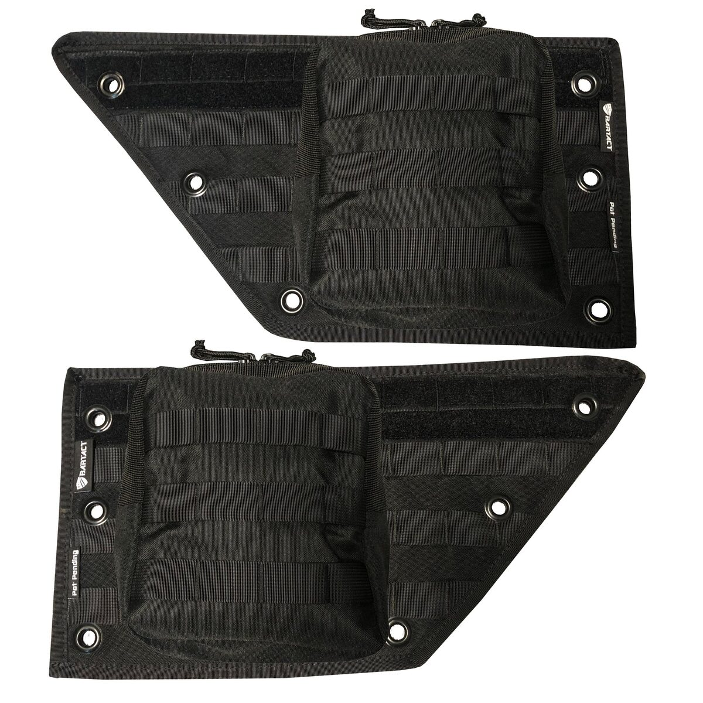
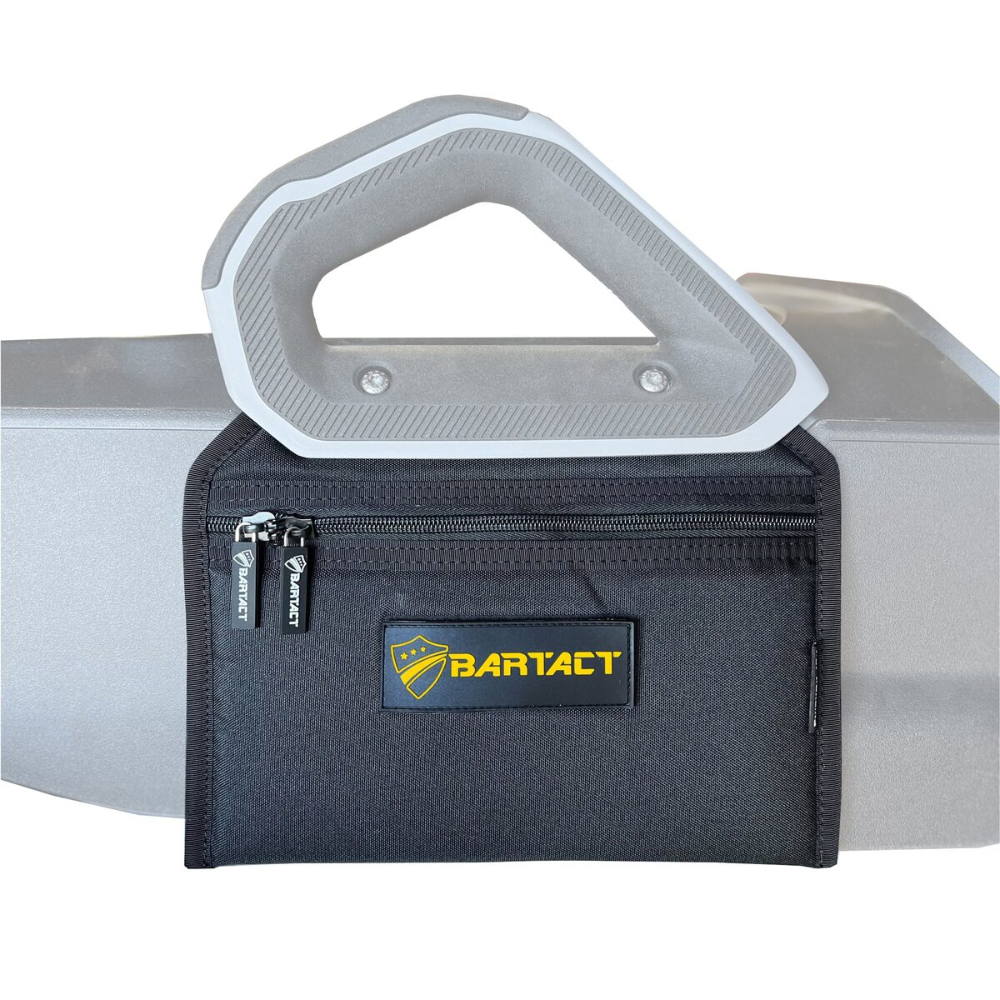
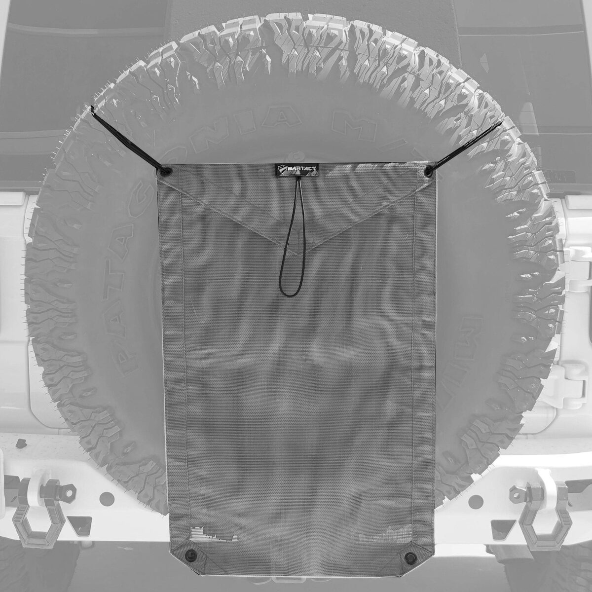

Best Ford Bronco Storage Upgrades 2026
Cargo racks, roll bar bags, hidden trunk boxes, and overhead baskets that actually fit the 2021-2026 Ford Bronco's specific cab and cargo area.

Bartact Front Door Storage Pocket Bags (Patent Pending) — 2021+ Ford Bronco (Pair)
Our top pick, and it's not close. Bartact's door bags are purpose-built for the Bronco's front door panels — MOLLE-compatible face, genuine mil-spec webbing, and made in the USA by a brand that actually engineers for this platform instead of reskinning a universal product. Design is patent pending. If you buy one storage upgrade, buy this one first.
View on Bartact.com →
Hooke Road Rear Cargo Rack & Trunk Organizer Shelf — 4-Door Hardtop/Soft Top
Mounts to the factory tailgate/roll bar structure to add a full shelf above the cargo floor — genuinely doubles your usable cargo volume without touching the rear seats. Bolt-on install, no drilling into the body.
View on Amazon →
VEVOR Rear Trunk Cargo Rack with Net — 300 lbs Capacity, Carbon Steel Basket Tray
A heavier-duty steel cargo rack with an integrated net, rated to 300 lbs. Good for owners who regularly haul recovery gear, coolers, or camping equipment and want a rack that won't flex under real weight — plus the net keeps smaller items from bouncing out.
View on Amazon →
Roll Bar Storage Bag Set — 2-Pack, Multi-Pocket Tool Holder
Straps directly to the factory roll bar with zero drilling. Multiple pockets keep tools, recovery straps, and small gear organized and within arm's reach from the driver or passenger seat — genuinely useful on every trail run.
View on Amazon →
Z8 Hidden Trunk Storage Box with Removable Divider
Sits under the factory cargo floor panel, adding a lockable storage compartment for valuables or tools that stays out of sight. The removable divider lets you split the space for smaller items instead of one open cavity.
View on Amazon →
JROAD Double-Layer Folding Tailgate Table with MOLLE Panel
Folds down from the tailgate to create an instant prep table or extra shelf at camp — then folds back up out of the way for driving. The MOLLE panel adds attachment points for pouches or tool rolls.
View on Amazon →
Overhead Roof Storage Basket — Heavy-Duty Interior Mount
Uses the Bronco's factory overhead mounting points to add a basket for lightweight, bulky gear — jackets, soft goods, recovery boards — that would otherwise eat up cargo floor space. Easy bolt-in install.
View on Amazon →
Bartact Front Door MOLLE Storage Panel — 2021+ Ford Bronco (Pair)
A second Bartact door-storage option: a full MOLLE panel (rather than pockets) for the front door cards, so you can load your own MOLLE pouches and configure storage exactly how you want it. Same made-in-USA mil-spec build as our #1 pick above.
View on Bartact.com →
Bartact Center Console Storage Bag — Passenger Side Lower Area, 2021+ Ford Bronco
Fills the dead space under the passenger-side lower console with a purpose-fit soft bag — a spot most owners never think to use until they see it done right. Another real Bartact Bronco-specific piece, not a universal reskin.
View on Bartact.com →
Bartact Spare Tire Trash Bag & Pet Divider (Patent Pending)
Hangs off the spare tire mount as a trash bag, dog barrier, or just a mesh catch-all for gear you don't want rolling around the cargo area. Purpose-built by Bartact for the Bronco/Jeep spare-tire mounting hardware.
View on Bartact.com →